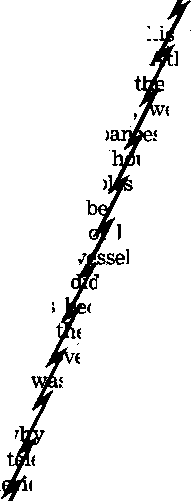
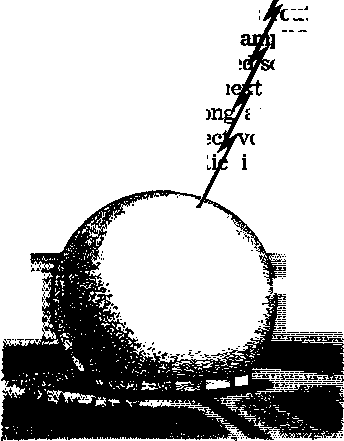
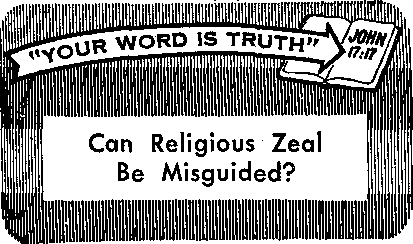

Communication by Satellite Proves Practical
PAG EE 2 1

Are You Subject to Moods?
PAGE 5
The Beauty and Power of Sand
PAGE 9
What to Do for Burns
PAGE 12
Communication by Satellite Proves Practical
PAG EE 2 1
THE REASON FOR THIS MAGAZINE
News sources that are able to keep you awake to the vital issues of our times must be unfettered by censorship and selfish interests. "Awake!" has no fetters. It recognizes facts; faces facts, is free to publish facts. It is not bound by political ties; it is unhampered by traditional creeds. This magazine keeps itself free, that it may speak freely to you. But it daes not abuse its freedom. It maintains integrity to truth.
The viewpoint of “Awake!" is not narrow, but is international. “Awake!" has its own correspondents In scores of notions. Its articles are read in many lands, in many languages, by millions of persons.
In every issue "Awake!" presents vital topics on which you should be informed. It features penetrating articles on social conditions and offers sound counsel for meeting the problems of everyday life. Current news from every continent passes in quick review. Attention is focused on activities in the fields of government and commerce about which you should know. Straightforward discussions of religious issues alert you to matters of vita) concern. Customs and people in many lands, the marvels of creation, practical sciences and points of human interest are a!) embraced in its coverage. "Awake!" provides wholesome, instructive reading for every member of the family.
“Awake!'’ ptedges itself to righteous principles, to exposing hidden foes and subtle dangers, to championing freedom for all, to comforting mourners and strengthening those disheartened by the failures of a delinquent world, reflecting sure hope for the establishment of God’s righteous new order in this generation.
Get acquainted with "Awake!" Keep awake by reading "Awake!”
Ui wi-. -^iir- itn Te. -m -in
Published Simultaneously in ths United States by in WATCHTOWER BIBLE AND TRACT SOCIETY OF NEW YORK, INC, 117 Adams Street Brooklyn, N.Y 11201, U.S.A,
and in Enoland WATCH TOWER BIBLE AND TRACT SOCIETY
Watch Tower House, The Ridgeway London N.W, 7, England N. H, Knobs, President Grant Suiter, Secretary
Average printing each issue: 4,475,001 44 a (Aistnili, South Africa,
Yearly subscription rates
Qfltett for sfmimoiittily editions
Alatrlea, U.S-, 117 Adams Btraet, BrodUyo, TJ.I. 11201 $1
11 &1, StrafbJteld, N.&W, $1
Canada, 150 RridgeUnd Ave., Toronto 19, Ont $1 E nil and. Watch Tower Hoiue,
The Ridgeway, tendon N.W. 7 7/6
N«w ZnUni, 621 Ne* North Rd., Auckland RW. 1 7/-Sorth Afrleif Prints Bag 2, P.O. Tri. 7On
(NaMhJjf rfltlini half the abav« rates.) RemlttMies for substrlptlons should be aeut to the office in your country. Otherwise send your remittance to Brooklyn. Nrtfio of expiration is sent at least two frsiua before subscription expires. '
Th* Blblo tramlrtlH regularly natf In Awake!” It the N
H’ketr rtta tntwJatJsw >ra
Now published in 26 languages Semimonthly—Atrikssna, Cebuano, Danish. Dutch, English, Finnish, French, Osman, Creek, Ilnko, Italian, Japanese, Korean, Norwegian. Portuguese, Spanish, Swedish, Tagalog, Zulu.
Monthly—Chinees, Clnjanjs, BUlgamon, Malayalam, Polish, Tamil, Ukrainian.
CHANGES OF *00HESS should rush it thirty days before yosr Moving data. Give us yoir old and new address (If possible, yaur old address label). Write Watch Tower, Watch Tower Hesse, The Ridgeway. London M.W. 7, England,
Entered aa second-class matter at Brooklyn, N.Y.
Printed in England
World Translation of ths Holy Scrl*tores, 1961 edition, d, this is sieorly marked.
CONTENTS
The Thirty-Year War
Communication by Satellite
Music with, an Oriental Flavor
“Your Word Is Truth”
Can Religious Zeal Be Misguided? 27

A4OKE DEADLY 77MWWAD I

LYING on the highways of the United States during 1965 were more dead and injured Americans than on the bloody battlefields of Vietnam. In the course of the year 1,724 American soldiers were killed in Vietnam and 6,110 wounded, but on American highways 49,000 men, women and children were killed and 3,500,000 injured. Of those injured, 1,800,000 suffered disabling injuries. But cold statistics fail to reveal the magnitude of this tragedy.
If all who were killed by motor vehicles last year were laid out side by side on a highway, they would make a tot? of corpses stretching for more than eighteen miles. By adding the injured to this row, it could be extended for another 1,325 miles. Imagine that! A row of dead and injured that would take you more than three days to drive by, traveling fifty miles per hour, eight hours a day. But that is the traffic toll for just one year in one country.
It has been estimated that motor vehicles in the United States have killed more than one and a half million people from the year 1900 to 1965. This exceeds by far gg; from 1775 through 1965. From the
viewpoint of the number killed and injured, it can be said that American highway traffic is more deadly than war. What makes this tragedy
even greater is the fact that it cannot be justified from any point of view, but it is something that could be avoided.
Cars that are more safely constructed could reduce the casualty figures, but more than this is needed. The principal cause for highway accidents is not the cars but the people who drive them. What else can be expected but accidents when several million drivers are indifferent to the safety and rights of others on the highway? What else can be expected but collisions when large numbers of drivers are not alert to the danger of high speed and of possibiy dangerous situations? What else can be expected but tragedy when so many drivers exercise poor judgment and” seem to be oblivious to the fact that there are other cars on the road besides their own?
Good sense should tell a driver, for example, that tailgating is foolhardy, that it is putting him into a dangerous situation with no allowance for a way out. A sudden stop by the car in front can send him smashing into its rear. Think of the injuries that could be avoided if more drivers would be conscious of this danger and drove in a manner so as to avoid it. All they need to do is leave enough space ahead to allow for a sudden stop, and this is just a car length for every ten miles per hour of speed. But too many of them think they will get to their destination faster by closing up this safety gap. Actually, they increase their chances of never getting there.
Anticipating dangers and taking actions to avoid them is known as defensive driving and is the way to avoid contributing to the highway tragedy. It means that a driver will recognize dangerous driving patterns in other drivers and will take action to avoid possible trouble. He will not take for granted that another driver will do what is sensible and correct but will allow for the possibility that he will do what is foolhardy. At the speeds modern cars travel, this is the only safe way to drive.
When approaching a blind cross street, for example, a driver who is driving defensively will assume that there is another car approaching this intersection and that it may not slow down or stop even if there is a stop sign there. It can be a fatal mistake to trust in traffic regulations and signals to protect you from accidents. Too many drivers ignore them. Driving defensively may slow you down a bit so that you take a little longer to reach your destination, but your chances of getting there are much greater.
Are you a driver that is overconfident with your driving ability and imagine that nothing will happen to you on a highway? Do you regard yourself as being above average in driving ability? Most drivers do. Do you point to the fact that you never have had an accident as proof of your skill? Eight out of ten drivers involved in fatal accidents could make the same claim. Overconfidence with motor vehicles is extremely dangerous.
Since the possibility of an accident is always present when you are in a motor vehicle, take what precautions you can to protect yourself. Use the seat belts in the car. They can increase your chances of avoiding injury. No matter how long you have driven without an accident, a car is still a dangerous vehicle, especially because there are millions of other drivers on the road. So do not feel foolish about using seat belts even for a short trip to a nearby store.
Too often accidents occur because drivers fail to show common courtesy and consideration for others. If the Bible principle of neighbor love were exercised by more drivers, highway travel would be much safer than it is. But even though others do not exercise it, you can. If you become sleepy while driving, you show neighbor love by not endangering the lives of other drivers by continuing to drive. The same is true if a driver has had alcoholic drinks.
Neighbor love is also shown by helping a passing car get in front of you by slowing down a bit. It is shown when you decide to pass a car by signaling your intentions and by choosing a stretch of highway where you can see far enough ahead so that you can pass without any danger of smashing into an oncoming car. Driving by the principle of neighbor love can save your life as well as the lives of others.
With each year bringing higher casualty figures, there is good reason for every driver of a motor vehicle to be gravely concerned. Although auto manufacturers can lower the figures by making safer cars and government officials can reduce them by better traffic and licensing regulations, the chief responsibility rests upon you, the driver. If every driver would drive defensively and exercise neighbor love, traffic on the highways would no longer be more deadly than war.

IT WAS Thursday, October 14, 1965. The place was the beautiful baseball park of the Minnesota Twins in Bloomington, Minnesota. The occasion was the final game of the World Series with the Los Angeles Dodgers.
The game had reached the last of the ninth inning, Los Angeles was leading 2-0 and Minnesota had two men out. But the game was not over, for the Twins had a man on base and a power hitter at the plate. The count went to two balls and two strikes. The crowd was tense, hoping for a home run to tie the score. On its front page the following morning the New York Times reported what occurred:
“As Bob Allison swung and missed for the final out . . . the crowd of 50,596—a record here at Metropolitan Stadium— seemed silent and depressed.” The strikeout rung down a mood of depression upon Minnesota fans and players alike. On the other hand, across the way in the Dodgers dressing room, a mood of gaiety reigned. In progress was a “roaring celebration,” the Times reported. “Champagne and beer flowed, mounds of shrimp were snapped up, drinks were poured over teammates’ heads.” The festive mood was in keeping with that most important victory in baseball.
You cannot escape it—circumstances such as this are bound to affect moods. True, you may not be a sports fan, and whether a particular team wins or loses may not concern you in the least. Nevertheless, there are circumstances or happenings that do concern you intimately, and they are almost certain to influence your mood.
For instance, a dear friend or close relative may pass away suddenly. Such an unexpected loss would understandably be felt keenly and no doubt result in a heavy-hearted, mournful mood, possibly lasting for days or weeks. Or perhaps the matter is not so serious. Your employer may give you a severe reprimand. Or at the plant where you work business may slow down and you may be laid off. Would these happenings affect your disposition? Would they cause you to enter a somber, gloomy mood? It is understandable that they might
Are Moods Proper?
This raises the questions: Is it proper to have moods? Are they becoming a Christian? Did Jesus Christ experience different moods?
First, it is important to understand what is meant by a mood. According to Webster’s Dictionary of Synonyms it means: “A temporary state or frame of mind in which one emotion or desire or one set of emotions gains the ascendancy.” A mood is a ‘predominate emotion,’ a ‘prevailing attitude’ or ‘general spirit.’
It is a fact that God’s servants often do experience different moods. At times one emotion gains the ascendancy and predominates; it becomes the prevailing attitude or general spirit For example, when God laid the foundations of the earth in preparation for human habitation, the scripture says that ‘the morning stars cried out joyfully and the angels began shouting in applause.’ This grand event generated an especially happy mood among God’s angels.—Job 38:4-7.
When on earth Jesus Christ was often responsible for elevating people to moods of unbounded delight, as at the time, for instance, when he resurrected the daughter of Jairus, the presiding officer of the synagogue. The Bible account says: “Immediately the maiden rose and began walking, for she was twelve years old. And at once they were beside themselves with great ecstasy.” (Mark 5:42) Imagine the overpowering mood of joy that prevailed on that occasion!
Sometime before this Jesus and his disciples attended a wedding feast and entered into the jubilant spirit of the festivities. When the wine ran out, Jesus performed the miracle of turning water into more wine. (John 2:1-11; Ps. 104:15) The joyous mood of the occasion was not to be marred by a shortage of provisions! Obviously it is proper for Christians to enjoy moods of merriment. But a word of caution is necessary.
The Need to Temper Your Moods
Since a mood has a certain pervasive or compelling quality, it can sometimes get out of hand if care is not exercised. A notorious example occurred when the Israelites proclaimed a festival to Jehovah just a few months after coming out of bondage to Egypt. The Christian apostle Paul’s comment regarding what happened is most revealing: “The people sat down to eat and drink, and they got up to have a good time.” (1 Cor. 10:7; Ex. 32:1-35) Carried away by their party mood, they abandoned godly conduct and engaged in shameful immorality. As a result, Jehovah’s swift punishment was executed upon many of them.
Today there is a similar danger. You, too, can be carried away with this compelling festive mood. If it is not controlled, this mood can lead to excesses in eating and drinking, and even to committing immorality. Is this proper for Christians? Absolutely not! The Christian standard is moderation in habits—not overeating, nor overdrinking, and especially not engaging in sexual immorality. So beware of the untempered festive mood!
Other Moods of God’s Servants
But what about other moods? Is a joyful mood the only proper one for a Christian? Did Jesus exhibit other moods? What determines whether a mood is proper or not?
Tragedies have always affected the moods of people, including God’s servants. For example, when their beloved leader died, “the sons of Israel proceeded to weep for Moses on the plains of Moab thirty days.” The Israelites also descended into a lengthy mood of mourning when their high priest Aaron died. (Deut. 34:8; Num. 20:29) But rather than being condemned by God, at appropriate times moods of mourning are recommended. God’s Word says: "Better is it to go to the house of mourning than to go to the banquet house, because that is the end of all mankind; and the one alive should take it to his heart.”—Eccl. 7:2.
This does not mean that a mood of sadness is to be preferred above a general spirit of joy and happiness. Rather, it means that when one dies, or a tragedy occurs because of neglecting to follow righteous principles, the wise heart is attuned to the seriousness of the matter. “The one alive should take it to his heart.” So, instead of a careless mood of merriment on that occasion, the wise heart soberly views life and considers the importance of living it in harmony with God’s will. A somber, contemplative mood is much more conducive to making wise decisions and offering comfort to the bereaved.
Consider the mood Jesus was in as he associated with the mourners following the death of his friend Lazarus. “Jesus, therefore, when he saw [Mary, Lazarus* sister] weeping and the Jews that came with her weeping, groaned in the spirit and became troubled; and.he said: ‘Where have you laid him?’ They said to him: ‘Lord, come and see.’ Jesus gave way to tears.” (John 11:33-35) Jesus felt compassion in his heart, for both the deceased Lazarus and his bereaved friends and relatives. Jesus’ sad mood was appropriate for the occasion.
Gloominess and Depression
In addition, God’s servants have been subject to moods of gloominess and depression. Nehemiah, the cupbearer for the Persian king Artaxerxes, experienced such a mood, as he writes: “I as usual took up the wine and gave it to the king. But never had I happened to be gloomy before him. So the king said to me: ‘Why is your face gloomy when you yourself are not sick? This is nothing but a gloominess of heart.’ ” Nehemiah explained that he had good reason to be in a gloomy mood, for Jerusalem still lay in disrepair even though more than eighty years had passed since the return of the Jewish captives from Babylon.—Neh. 2:1-3.
Early Christians, too, had moods of gloom and depression. For example, following the arrest and death of Jesus Christ, the disciples were seized by despair and disappointment, peter “wept bitterly” after denying Christ. Two disciples on the road to the village of Emmaus “stood still with sad faces.” But even with the gaining of greater understanding moods of depression continued among some Christians, so that the apostle Paul saw the need for encouragement: “Speak consolingly to the depressed souls.”—Luke 22:62; 24:17; 1 Thess. 5:14.
Today Christians are no different; they are also subject to moods of depression. The cause is not always easy to pinpoint Poor health, loss of employment, frustration, worry, resentment, misunderstandings, homesickness, periodic adjustments of the body processes, such as during a woman’s menstrual period, all of such things can be responsible. Sometimes physical and mental fatigue team up to cause depression. Or a weakened spiritual condition and a corresponding inability to gain comfort from the Scriptures may be responsible. If no other cause can be identified, the weather may well be to blame.
This cause should not be taken lightly. Observed Dr. Clarence A. Mills, as Professor of Experimental Medicine, University of Cincinnati-. “When the barometer falls, clear thinking becomes difficult and one feels less oriented in his surroundings. Feelings of frustration develop and cause rebellious irritation or depressed despondency. These are the times when attempts at suicide are most common ... A change to rising [barometric] pressure, as the storm center passes on, brings the same clearing to mental atmospheres as it does to outdoor weather. Better blood supply to the brain means a freer flow of thought, . . , Everything takes on a more rosy, exuberant character.”
Coping with Moods
Since all persons are subject to moods, you will want to learn to cope with them effectively. Tempering your moods, keeping them under proper control, is the chief objective. An exuberant, happy mood is certainly appropriate, yet, as has been seen in the example of the Israelites, if uncontrolled, it can lead to trouble.
Similarly, moods of sorrow are also proper on occasions. But, at the same time, it is not right to surrender to moods that cause one to consider taking his own life. The patriarch Jacob experienced a deep mood of sorrow when told that his beloved son, Joseph, was dead. However, it would certainly have been improper if he had succumbed to it and committed suicide. (Gen. 37:33-35) The apostle Paul pointed out that God’s servants should “not sorrow just as the rest also do who have no hope.”—1 Thess. 4:13.
It would likewise be improper to surrender hopelessly and completely to moods of depression or despondency. The apostle Peter did wrong, and his distressed mood was appropriate, revealing true sorrow and repentance. Correction and discipline may also put you in a somber, contemplative mood, and properly so. “No discipline seems for the present to be joyous, but grievous,” the Bible says. (Heb. 12: 11) But then, after a while, you need to snap out of it, and take positive action in harmony with the corrective experience.
Moods are influenced by your relationship with others, so take immediate steps to straighten out any misunderstandings or differences. Also, turn to God in prayer. Talking problems over with Him is bound to settle your mind, and hence improve your mood. "Throw your burden upon Jehovah himself, and he himself will sustain you,” His Word promises.—Ps. 55:22.
Moods are also affected greatly by your physical condition. If your body is overtaxed and does not receive proper rest, problems many times seem bigger than they are. Very often the depressed feeling disappears by simply cutting out late-hour television viewing and getting needed sleep. A change in activities, too, often helps, such as a walk in the fresh air, a game of tennis or some other enjoyable diversion. At times listening to soothing music may improve your mood.
Resist Moodiness
Moods become improper and unchristian when they prevent you from displaying the fruitages of God’s spirit, including love, joy, peace, long-suffering, kindness, goodness, faith, mildness and self-control. (Gal. 5:22, 23) Understandably, certain moods will, at times, make it more difficult to bear this fruitage. For example, women at the time of their menstrual periods need to be especially cautious to temper their frequently experienced ‘moods of depression or irritableness. Whenever you are beset by moods try extra hard to be kind and patient.—Prov. 21:23; 31:26.
A real Christian will make every effort to avoid being a moody person; that is, one "subject or given to moods, or fits of depression or bad temper.” Saul, the first Israelite king, was such a person, and when in his moods he would often act irrational. Twice he tried to pin his musician David to the wall with his spear, and once, in a fit of anger, threw a spear at his own son, Jonathan. Others did not know what to expect from him. He certainly was not a desirable companion! —1 Sam. 18:10, 11; 19:9, 10; 20:32-34.
So do not be like King Saul. Work hard to temper your moods. Do not surrender to them. Cultivate the fruitage of God’s spirit, and display this fruitage even when you feel moody. True, mankind today is subject to sin and imperfection, and, therefore, bad moods. But these can be resisted and kept under control. God’s blessing will go with you as you constantly look to Him for help in doing so.
WHAT is sand? That seems like a simple question, for does not even the child know what makes t an attractive beach and furnishes material for all g g sorts of castles, walls and || » dit&hes for which his imag- | ination supplies the blueprints? However, the universality and the massive quantity of sand may have rendered us somewhat indifferent to its characteristics of beauty and power. You do know that sand can be a painful nuisance if it gets in your eye or in your shoe. But did'you know that it has a vital rede in making earth’s scenery beautiful and in guarding the land on which we walk?
When you throw a handful of sand mixed with dust into a pan of water, you note that the sand quickly sinks to the bottom while the dust continues in suspension for a long time. This tells us two things about sand; it is heavy and it is not readily soluble in water. We find out why upon examining a few grains at close range. They are actually particles of rock or mineral substance, very hard, and displaying all the stages of wear.
The childhood thrill of racing barefoot across the smooth-packed sands of a beach at low tide is one long to be remembered. But how is it that sand can be so firm and smooth? This is accounted for by the fact that as the tidewater drains away, a small quantity remains and binds the grains of sand by capillary action. The smoothness of the beach is understood when we keep in wind, that the tidal waters carry a great deal of fine sand- in suspension, and the last grains to be deposited on the beach are naturally the lightest and finest.
Variety in Color and Shape
Unless you have traveled widely and exercised your powers of observation, you may have had the idea that all beaches and deserts have the same kind and color of sand. But this is not the case. Some beaches display the regular, sand-colored appearance, while others sparkle white in the sunshine. That whiteness is most likely due to the composition of the sand—coral and seashells pounded and broken by the heavy seas, and rolled by the waves into tiny rounded particles. On the other hand, in volcanic regions one can note darkcolored beaches. Black lava, eroded by rain and wind, has, in such instances, become part of the sea frontier.
What determines the overall color of sand in a desert? Largely it is the type of rocks and mountains the eroded particles of which are deposited in the area by the prevailing winds. If, for example, there is considerable iron present in the rock, one would expect to find a reddish tinge in the sand.
Precious minerals, such as gold and platinum, are sometimes washed down by rivers and deposited here and there. Such a deposit is called a placer. The sands will then reflect the color of the minerals.
This reflective power Is what imparts added beauty to sand. In a landscape, have you noticed how the sands tend to take on the color of the hour? At noon it may be golden yellow, and then in the evening it may take on the reddish tinges of the sun-, set. Sand also reflects the moods of the weather in the same manner.
When you take a handful of dry sand and let it run through your fingers, you might get the impression that all the grains are of the same color. But now, pour some clean water on the sand, and, the dust having been partly washed away, you will observe a great variety of color. In fact, no two grains seem to be alike. Examined with the aid of a microscope, sand particles wifi reveal still greater beauty, for then you can see the many facets of the younger particles, not yet smoothed and rounded by much friction.
How Produced
The powerful agents that are continually at work producing sand are the air and water. How? Just think of the driving rain as it beats moisture upon rock surfaces, causing it to penetrate into every hole and crack, dissolving and breaking down what appears to be quite solid, by chemical action upon the salts contained in the rock. In colder regions water seeps down into rock seams and then, in the process of freezing, exerts powerful expansive force that cracks and heaves great masses. Even damp air has the ability to erode rocks and minerals of softer constitution.
Eventually the wind does its part during periods of dry weather. By its strong gusts it can carry the loosened particles of rock hither and thither across the earth’s surface, thus by friction rendering rock chunks down into sand. Wind and running water unite to move the sands down to the plains below. The power of wind to move sand is demonstrated by the tremendous sandstorms in the deserts, and by the drifting dunes of sand that occur in widely separated parts of the earth.
Utility of Sand
One would imagine that the deserts and beaches of the world would amply supply the quantity of sand man requires to fill the ever-growing demand for commercial use. But then, the problem of transportation expense often has to be considered, especially in regions far from the desert or the seashore. To augment the natural deposits men have engineered powerful crushing machines with which large chunks of sandstone are ground and refined to any desired quality.
Consider the multiplicity of uses to which sand is put. It is essential in the preparation of mortar and concrete. It is employed by metal foundries for making molds. It is used for filtering water, and in the manufacture of scouring soaps, sandpaper and abrasive wheels. It is of vital importance in the construction of modem streets and highways. Its abrasive power is utilized in sandblasting techniques, in which a jet of compressed air fires a fine stream of sand through a nozzle, and the operator can direct it here and there over a stone surface that needs cleaning. In this manner ancient-looking stone structures get a real face-lifting.
The glass industry requires huge quantities of sand. The glassmaker mixes a large quantity of sand with small amounts of lime, soda and other materials, heats the mix perhaps to as much as 3000° F, and when it cools it becomes glass. In the United States alone the annual consumption of sand for this purpose amounts to well over two million tons.
Perhaps the most important role of sand, however, is that which it plays right there on the beaches of the world. It is actually a more powerful barrier to the encroachments of the sea’s wild waves than the solid bluffs and headlands. In what way? Well, the sands give or yield sufficiently so as to cause the fury of the waves to be spent gradually. Rocks, on the other hand, present an unyielding front that is soon carved and smashed by the pounding seas. Sand is a strong front line of defense.
Beautiful but Dangerous
Despite its beauty and utility, sand can also be dangerous. When great masses of sand blown by hurricane winds go on the rampage, how puny man’s efforts to combat its invasions! In many areas, where man’s shortsightedness has permitted the removal of protective forest cover, the sands have advanced victoriously, and sand dunes now occupy regions once fertile and productive.
Violent sandstorms can wreak tremendous damage. They have been known to -cut down wooden telegraph poles like matchsticks, and to transform clear glass panes into opaque ones. They can bring darkness at noonday, obliterating all landmarks very swiftly. They have suffocated and buried mpn, horses and camels.
Then there are the quicksands, those treacherous areas where the unsuspecting can be quickly sucked below the surface. Quicksand areas are usually encountered near the mouth of a river or near the lakeshore in a basin from which there is little drainage. The undrained water seems to lubricate the sands, robbing them of their stability and rendering them incapable of holding any great weight It is reported that in 1875 an entire train with its locomotive sank into quicksands near Pueblo, Colorado, and, though the area was later probed to a depth of fifty feet, no trace of the train could be found.
For those who become endangered by quicksands, there is good counsel. Do not panic, and do not fight to extricate yourself, for that will simply get you in deeper. Rather, with legs and arms outstretched, distribute your weight over the surface and then slowly and easily inch your way toward solid ground. On the same principle the foot shod with a snowshoe will not sink so deeply into soft snow.
The Bible dignifies sand by using its countless grains to represent an unnum-berable multitude. (Gen. 22:17) In more recent times it came to be associated with time, so that we have the expression, “The sands of time are running out.” This is doubtless an allusion to the hourglass or sandglass, that peculiarly-shaped, vessel that looks like two egg cups joined together with a tiny passage connecting them, through which the fine sand runs from one cup to the other, thus measuring the passage of time. Sand is also used synonymously of “courage” or “grit” as in the expression, “That man has plenty of sand.”
So, despite its humble place on the world scene, mostly underfoot, sand does possess characteristics that render it desirable and useful to man. It has its own beauty and the power to reflect other beauty around it. And man is just beginning to discover many purposes it can and will serve in the future. It has, like some other elements of creation around us, its dangerous moods, not all of which man has yet learned to control. Apart from all its beauty and utility, however, we must surely stand in awe before the wisdom of a Creator who furnished such an ingenious bulwark against the invasions of the stormy sea! —Job 38:8-11.
WHAT TO DO FOR
RHRNS
Think or it! in the United States alone, more than one million persons a year, on the average, receive bums serious enough for them to seek medical treatment or cause them to be work-incapacitated. Approximately 70,000 of these burned patients are hospitalized, and, in some years, more than 10,000 die.
Would you know what to do if you were burned? If your child suffered a bad bum, would you know how to provide relief? Did you know that immediate first-aid measures can prevent ugly scars? How should burns be treated? There are differing medical opinions.
The Canadian Journal of Surgery, in its July, 1962, issue, noted regarding this uncertainty: “The burn wound has been treated in several different ways; of these tanning with tannic acid has been abandoned because of its toxicity. Currently the method of treatment depends on the surgeon’s individual preference.” The article then enumerated several of the popular, and yet radically different ways of treating the seriously burned patient.
Classification of Burns
Since treatment depends, to a large extent, on the depth and extent of the burn, it is important to identify the different degrees and seriousness nf burns.
Burns are generally classified according to depth, either as first-degree, second-degree or third-degree burns. A first-degree bum involves only the outer layers of the skin. It is characterized by mere reddening of. the skin. Tissue destruction is superficial. The skin is sore and tender, but there is no blistering. While they can be quite painful, first-degree burns will not scar and will heal of their own accord.
Second-degree burns, on the other hand, reach to the inner layers of the skin. Here the tissues are damaged and capillaries are injured, resulting in leakage of fluid from the blood. This causes the formation of blisters. The skin is usually reddened, swollen, and if the blisters are broken, weeping. However, second-degree burns are not so destructive that new skin cannot be formed to repair the damage, often with little or no scarring.
Third-degree burns are the most serfous. They penetrate and destroy the full thickness of the skin. The area may appear bright red, brown or dead white, and may not at first be swollen.
Since nerve endings are destroyed, there may be little or no pain. AnS since all elements of the skin required for regeneration are ruined in third-degree burns, the skin is no longer able to repair itself. The only way the body has to close the wound is to draw the adjoining skin together over the gap, which often results in ugly disfigurement. Such bums therefore call for skin grafting.
Third-degree burns, regardless of the extent of body surface affected, are understandably serious. Yet, a very extensive first-degree bum may be just as serious as a limited third-degree bum. Usually bad burn cases include all three types. It is extremely critical and often fat^l when second- and third-degree bums cover more than 50 percent of the body.
The Home—Principal Danger Area
Since thehome rather than the workshop is the place where bums are most likely tp occur, everyone should be concerned about them. Two studies by leading medical authorities revealed that 70 percent of all burn accidents occurred around the home. In the experience of one of these doctors, 70 percent of all burned patients admitted to the hospital were children. Ignition of clothing, particularly the dresses of young girls, account for a surprising number of burn accidents. In such a case, immediate action is necessary if the person is to survive.
The aim should be to smother the fire, not fan it. A blanket, a rug or even a coat or other garment can be used for this. Immersion in, or a shower of water or other nonflammable liquid is of obvious benefit. One should not run, as that fans the flames; nor remain standing, since in an upright position flames may be inhaled or the hair set afire. If no covering material is nearby, the person should lie down and roll over slowly. Only if nothing else is available should dirt or sand be used to smother the flames.
Scalding with hot liquids is also a frequent home accident. In one study, it was the cause of 54 percent of the bums in children under fifteen years of age. Contact with hot metals, such as a stove or iron, also cause painful bums. Chemicals, too, at times severely burn the skin. What should, vou. da it so,1 a. ok t 'ifi 'yum
household sustains a burn? Is there any recommended treatment?
Medical Advice
Medical authorities generally discourage home treatment. Today’s Health, in an article prepared with advice from a council of the American Medical Association, said: “First-degree bums involving only a small area are usually of minor nature and little or no treatment is required. Commercial burn preparations may relieve the pain. . . . For second- and third-degree bums, a sterile or dean dressing should be loosely applied to prevent infection until medical care can be obtained. No medications, greases, oils, ointments, or butter should ever be applied.”
A recognized authority in the field of burns commented similarly: “The initial step in the care of a burned patient is to cover the bum wound in order to prevent to'/i to pain by
preventing air from coming in contact with the injured surface. The patient should then be transported to a physician’s office or hospital. Medicants or home remedies should not be applied. A clean sheet or doth may be used as an emergency dressing.”*
This is standard advice. Most authorities recommend no or minimal first-aid measures, simply advising to cover the -area with, a dean. sheet beferce. btaosfex to
* Treatment of Burns by Curtis P. Artz and Erle Reiss.
a doctor. This advice apparently is based on the belief that oils and ointments add to the difficulty of cleaning the bum and increase the danger of infection.
Early home treatment, however, is undoubtedly of benefit in many bums. For instance, one European doctor writes about a woman who, in lifting a heavy pot of boiling water, slipped and sustained severe scalds that endangered her life. Her husband quickly spread fresh uncooked chicken fat over the extensive bum. The patient quieted down and was able to sleep that night. Within a few days the pain had completely gone and new skin was forming again.
Another recommended treatment is with the use of onions. In the April 1964 Journal of the American Institute of Homeopathy, a Pennsylvania physician reported: “Well salted, grated, raw onion applied to any burn immediately relieves and stops plasma loss." Interestingly, this was frequently recommended treatment in medical literature years ago. Regarding this the present-day bum authority Stephen R. Lewis said: “The use of onions with salt was widely reported and perhaps had a real application in minimizing some of the blister formations in the treatment of bums.”
Cold Water and Cold Packs
Another common treatment in days gone by was the use of cold water and cold packs. But it has largely been ignored by the medical profession today. Recently, however, there has been an indication of a revival of this treatment.
Dr. Alex G. Shulman is a foremost en-courager of such a revival. Writing in the August 27, 1960, issue of the Journal of the American Medical Association, he noted that the use of cold for burns was “known to the ancients but seems to have been ignored by physician and layman alike. Although scattered references in the literature are unanimous in praise of this form of treatment, it is not generally used today. Indeed, most physicians say ’it isn’t done,’ although no one quite knows why.”
In his article, Dr. Shulman reported on successful treatment of 150 patients who had burns of all degrees, but with less than 20 percent of the body surface affected. The area was immersed into a large basin of cold water to which ice cubes and hexachlorophene (pHisoHex) were added. If the burned part could not be submerged in water, then ice-cold moist towels were applied to the part. “The time factor between injury and treatment determines the result,” he noted. “This treatment should, therefore, be initiated if possible by the patient or first-aid attendant at once.” And it “must be continued until it is possible to discontinue treatment without the return of pain.”
Describing the treatment of one of his patients, Dr. Shulman wrote: “A 3-year-old child who had grasped the hot-water pipes leading to a shower room was brought in screaming with fright and intense pain of her hands. When the hands were immersed in cold water, the child immediately displayed complete relief and refused to remove her hands until some time later. Once she was able to remove her hands without pain, the skin did not blister and no further treatment was necessary.”
Although there was little room for exact comparison, one patient did furnish an interesting example-He was splattered with steam on face, arms and chest. Cold compresses were applied to all areas, except one remote area on the abdominal wall that was overlooked. While all the treated areas healed within one day, the abdominal patch blistered, remained painful, crusted over, and required over two weeks for complete healing. Use of cold water, it appears, can prevent the formation of ugly scars.
Hr. Ofeigur J. Ofeigsson of Reykjavik, Iceland, another exponent of the cold-water treatment of burns, reported a similar case involving a forty-year-old woman. He wrote in the July 1959 issue of the British Journal of Plastic Surgery:
wAs a child of two years she tell and plunged her right hand and arm up to the [armpit] into a pot of boiling milk. A woman who was present at the accident put the patient’s hand and arm immediately into a bucket of cold water, but the bucket level reached only up to her elbow. Now, after thirty-eight years, the back of her right hand showed a smooth superficial scar, while the rest of her hand and forearm up to the elbow seemed Quite normal. [However,! the arm from the elbow to the shoulder was disfigured by ugly brown and white scars.” Obviously the cold water was of inestimable benefit.
For the treatment of minor bums, Dr. Ofeigsson recommends; “Run cold tap water over the- bum or immerse it in cold water, milk, sea water, soft drinks, or any dean, harmless fluid dose at hand or in snow or ice (the latter possibly from the refrigerator). . . . Keep the cooling fluid cold enough to provide the greatest relief from pain, and do not withdraw the burned area from the cooling medium until pain and smarting have completely disappeared. ... If blisters have formed, avoid breaking them as long as possible.” He also notes that the cooling fluid should be changed to clean water as soon as possible.
What the Cold Does
It is the opinion of recent investigators that the application of cold soon after an injury occurs stops and even reverses the progression of burn damage. Writing in the September 1963 issue of Industrial Medicine and Surgery, Drs. Omero S. lung and Franklin V. Wade noted: “When a burn occurs, not all the damage is produced at once. The pathological process continues. . . . We believe that the cold application can slow down and even stop this sequence of events.”
In reviewing the treatment of burns the Surgical Clinics of North America, February deserved: “The rationale for this [cold water] therapy has been to revert the pathophysiology of the bum edema. It is the impression of these investigators that hypothermia [the application of cold] will reduce the severity of the local pathological changes, improve tissue regeneration and arrest degeneration of the underlying tissues.”
Investigators, such as Dr. Ofeigsson, have noted that the use of very cold water on extens.lve hums, can.
which can be fatal. So, on very extensive wounds, the use of warmer water, from 22 to 25° C, is recommended. In the treatment of serious burns, Dr. Ofeigsson suggests: “Let the patient decide how cold the cooling water should be, except when he feels chilly. If he does feel chilly, give him some hot drink or thin soup, add clothing to the unburned areas of the body (no hot-water bottles) and rub them,” such as the soles of his feet.
Adoption of Cold Treatment
The importance of washing a chemical burn with water has always been recognized. However, it is only recently that the use of cold water is again gaining popularity in the treatment of other burns. Several doctors reported in The Journal of Trauma, September 1963: “Interest in the use of cold water in the early treatment of bums has developed since the. reports. ofi Ofeigsson and Shulman in 1959 and 1960. We have been treating patients for the past year with this method; our clinical results were encouraging."
At a recent meeting of bum experts, Dr. Stephen R. Lewis commented during a panel discussion: "We have used ice for a number of years. . . . Our general plan on the small burn where it involves just a hand or lower extremity is to simply put them in ice water for fifteen minutes. This should relieve the pain and generally does. ... Take them out in fifteen minutes, and put them back in and out, until the pain completely disappears out of ice water. This usually occurs within a period of about three hours using ice.”*
In the July 1963 issue of Industrial Med~ icine and Surgery, doctors associated with the Kaiser Steel Corp,, Fontana, California, reported: “In our plant, when such burns have been brought to our attention, treatment has been initiated within approximately thirty minutes. Cold soaks can be used for certain areas such as fingers, toes, etc., but in most areas cold packs are applied. . . . The length of cold application ranges from one to ten hours depending upon severity, extent, and location of the burn injury. The cold is never removed until the pain has subsided, and recurrence of pain prompts the reapplication of cold to the burned area.”
Reluctance to Recommend
Strangely, however, there seems to be a reluctance in the medical profession to recommend this treatment. Literature dealing with first-aid for burns generally ignores it. It appears that many physicians are reluctant to recommend a treatment that is not in vogue. Another instance is in the treatment of shock due to severe burns. Blood transfusions still are
* Burns—A Symposium, 1965, complied and edited by Drs. Leon Goldman and Richard E. Gardner. standard treatment, despite the fact studies have indicated that a saline solution is better. For example, the Journal of the American Medical Association back in its June 4, 1960, issue reported:
“That a balanced salt solution is adequate treatment for shock due to burns is attested to by the absence of mortality for 10 days after the burn in the group which received saline but no blood, .. . The mortality difference for the group with extensive burns (45 to 64% of the body surface burned) is highly significant. The 89% mortality for the blood-saline group, compared to 36% mortality for the saline solution only group indicates that a balanced salt solution can be used effectively and safely in extensive bums as well as those involving limited areas of the body.”
Precautions Against Burns
The sight of a badly burned patient, red flesh weeping fluids and in places charred brown, is one not easily forgotten. It is a nightmare that is occurring all too often! Do not allow it to happen to you or your loved ones. There are some authorities who believe that the exercise of reasonable caution and the introduction of well-known safety measures would prevent as many as 70 to 80 percent of all burn injuries.
One medical journal in a review of many burn accidents involving children noted: “Most of them were judged to have been preventable if hot fluid had always been put out of the child’s reach, if a child had never been left alone with hot bathwater, if the handle of the saucepan had never been left protruding out of the fireplace and so on.” So exercise care. Be cautious with fire, hot fluids and hot objects. Do not be a burn victim.
WITHIN three decades of the defeat of the great Armada of Philip n of Spain, another prince of the house of Hapsburg embarked on an ambitious career that was to prove disastrous to all central Europe. This was Ferdinand, duke of Styria and heir apparent to the throne of the Holy Roman Empire of the Germans. Ferdinand was trained by Jesuits and appears to have early cherished the idea of leading a great campaign to roll back the forces of the Reformation and restore all Europe to the church of Rome.
In that seventeenth century all of central Europe, from the Rhone to the Elbe, and from the Baltic to the Mediterranean, was occupied by more than two hundred states of varying size. Each was held by a hereditary prince or a prince-bishop, and seven of the most prominent of the princes formed an electoral college, whose members elected from among themselves each new emperor. By intrigue and by overt war these principalities were forever trying to enlarge their territories, while keeping a jealous eye upon the increasing power of the elected emperor.
Adding to the confusion of those times was the fact that in this crazy patchwork of petty states Protestantism controlled in some, Catholicism in others. The prince in each instance determined the religion of his subjects. There was as much enmity between Lutheran and Calvinist states as between Protestant and Catholic states. It often happened that a prince would defect to the Reformed faith simply with a view to seizing the church property in his principality for his own enrichment.
Bohemian Revolt
The childless emperor Matthias determined that Ferdinand should be his successor, and to this end first proclaimed him king of Bohemia and then king of Hungary. The Bohemians saw in these moves a threat to their political and religious freedom, for Ferdinand was already notorious as “the merciless exterminator of Protestantism in the eastern Alps.” In 1618 they revolted, refused to acknowledge Ferdinand and sought the aid of the Protestant Union of princes. Thus the long war began. In 1619 the Bohemians crowned as their new king Frederick, ruler of the German state of the Palatine and one of the imperial electors. However, upon the death of Matthias, Ferdinand managed to be elected emperor and swiftly set about-retrieving Bohemia.
Expected support for the Bohemian revolt by the Protestant princes and by Frederick’s father-in-law, James I of England, failed to materialize. Ferdinand, for his part, obtained the ready support of the Catholic League of princes, whose leader was his own cousin, Maximilian of Bavaria. Maximilian, who had been raised with Ferdinand under Jesuit tutorship, gladly agreed to assist the cause under promise of substantial rewards. The army of the League soon quelled the rebellion, drove out Frederick and his English wife, seized a portion of the Palatine and turned it over to Maximilian, who was also now appointed an imperial elector in place of the outlawed Frederick.
Jesuit historians declare that Ferdinand and his son “were able men, and though sincerely Catholic meant to respect the privileges which the Protestants had wrested from [emperor] Charles V.” What actually took place? Having been absolved by the pope’s legate from his oath to maintain the rights of his Bohemian subjects, Ferdinand now proceeded with his basic plan. Twenty-seven nobles and great numbers of commoners died on the scaffold. As many as 728 landowners had their estates confiscated. A university rector had his tongue tom out. A celebrated scholar was beaten to death, and at least 30,000 families fled rather than face the cruelties and harassments of the Jesuitized regime. In 1627 all Protestants in Bohemia were banished from the kingdom.
Protestant Denmark Intervenes
In 1625 Christian IV of Denmark led an army into Germany to relieve the dangerous position of the Protestants: He was met by the imperial army under Count de Tilly, backed by a mercenary force under Count Wallenstein. Tilly, described by Catholic historians as “the pious and honest Tilly,” was originally trained by Jesuits for the priesthood, but forsook the clerical career for that of a soldier of fortune. Wallenstein, born in a family having Hussite sympathies, was eventually raised a Catholic, and was something of a mystery man even to his associates. Astrology fascinated him. The stars evidently promised him a grand future.
After a few years’ unequal struggle with such renowned generals and failing adequate help from the German Protestant princes, the army of Christian IV was driven back into his own land and forced to give up the fight. The cause of Protestantism now seemed to hang upon a few vacillating princes who were no match for the growing power of the imperial army.
Emperor Ferdinand now felt strong enough to make his next move. In 1629 he had the imperial diet issue the Edict of Restitution, whereby all ecclesiastical property seized since the year 1552 was to be restored forthwith to the church. Savage mercenary troops stood ready to enforce the decree. At the same time Spanish and Italian influences, jealous of the power of Wallenstein, prevailed upon Ferdinand to dismiss him. As excuse they cited the cruelties and depredations of his plundering hordes.
Swedish Intervention
Germany now seemed to be at the mercy of an emperor to whom, it is said, the voice of a monk was the voice of God. At the darkest hour, in 1630, Gustavus Adolphus of Sweden, with an initial force of only 15,000 men, landed on the Baltic coast of Germany. As he left his native land, convinced that he would never return, he declared:
“Let no one imagine that I am actuated by private feelings or fondness for war. My object is to set bounds to the increasing power of a dangerous empire before all resistance becomes impossible. Your children will not bless your memory if, instead of civil and religious freedom, you bequeath to them the superstitions, of monks and the double tyranny of popes and emperors.”1
The amazing progress of his well-disciplined army through north Germany would have been even more spectacular had he received the cooperation of the German princes. His arrival at Magdeburg was just too late to save that most prosperous city of northern Germany from the ravages of the imperial forces. After a stubborn defense, the city fell. Twenty thousand inhabitants were butchered and the city set afire. Walloon soldiers took savage delight in stabbing babies at their mothers’ breasts, while Croats amused themselves by throwing children into the blazing buildings. Wives and daughters were Coarsely abused before their own helpless men. The “pious” Tilly intervened in behalf of a few religious houses, but would not curb the^ barbarities.
In 1631 at Breitenfeld near Leipzig, this conqueror in thirty-six battles finally met up with the army of the Swedish king, who was derisively called "the Snow King.” After a desperate struggle the Swedes won the day, and again the following year inflicted a second crushing defeat on the imperia] army, Tilly himself being mortally wounded. At this, Emperor Ferdinand was thrown back upon Wallenstein as the only hope of extricating himself from threatened disaster. The Count, this time with far greater powers and promise of grander rewards, hurriedly assembled another army. At the battle of Lutzen the Swedes met their formidable foe and during the heat of the fight Gustavus fell among the slain. As darkness settled it began to look as if the Swedish force had met its first major reverse. However, the morning light revealed that it was Wallenstein’s army that had fled the field.
At this opportune moment Ferdinand’s advisers again persuaded him to rid himself of a powerful servant who might one day aspire to be his master. Wallenstein was accused of treasonable dealings with France and the German princes. In 1634, contrary to all that he had been led to expect by the stars, Wallenstein was deprived of his generalship and stricken down by assassins.
Despite the defeat at Liitzen, the imperial army was at this point greatly strengthened by the addition of Spanish forces and by the defection from the Swedish alliance of several Protestant princes who were jealous of Sweden’s growing power. Later in 1634 the heretofore invincible army of Sweden was defeated by the imperial armies at Nordlingen, and again the fortunes of war swung to the side of the Catholic League and the empire.
France Enters the War
For many years Cardinal Richelieu had been secretly subsidizing the Swedes and their allies, in the belief that only thus could France hope to achieve supremacy in Europe. So in 1635 France declared war on Spain, Ferdinand’s ally, moved French troops into western Germany, arid promised further financial support to the Swedes and other allies if they would keep up the struggle. The devastating conflict dragged on.
The armies on both sides came to be vast hordes of heartless mercenaries, the scum of all nations, who sold their services to whoever could offer the greatest plunder. Ravaged fields were left untilled. Robber bands multiplied as legitimate means of living disappeared. Famine and pestilence took a dreadful toll. Miserable survivors in some areas were reduced to eating the flesh of those slain in battle or left upon the gibbets. Unprotected wayfarers were often ambushed and slain to eke out the food supply. Even graves had to be guarded to prevent disinterment of the corpses for this same grisly purpose.
It would seem that the counsel of humanity or of plain good sense might have moved Ferdinand to revoke the Edict of Restitution and proclaim a general amnesty so as to put an end to the multiplying crimes. But, as one historian expresses it, “the grayheaded hypocrite merely folded his hands, dripping with gore, in prayer, and demanded fresh victims.” His own bigoted declaration that ‘he would sooner lose everything than tolerate the heretic’ was surely well on the way to being realized. He died in 1637, to the very last under the thumb of the Jesuits.
Peace of Westphalia
After eleven more years of senseless devastations, all parties agreed to come to terms. In Westphalia peace treaties were signed in 1648, bringing to a close what some have called the longest and bloodiest and most destructive war up tp that time. France was awarded considerable territory west of the Rhine. Sweden gained a foothold on the Baltic coast of Germany. Switzerland and the United Netherlands were recognized as independent states, henceforth freed from Austrian and Spanish domination. Calvinists were granted the same, rights enjoyed by Lutherans since 1530. The German princes became more independent of the central authority of the imperial diet. This was, of course, a bitter pill for both pope and emperor. Nevertheless, there was some immediate gain to the Catholic interests. Many German states had been brought back to the fold of Rome. Austria, for example, where previously there had been but one Catholic to thirty Protestants, was now solidly Catholic.
The Terrible Effects
So terrible were the ravages of this war that Germany’s population was reduced by from one-half to two-thirds. Two-thirds of all movable property had been plundered. The duchy of Wurtemburg had only 50,000 inhabitants left of 500,000. Augsburg’s population was reduced from 80,000 to 18,000. Less than one-quarter of the people of Bohemia remained. Human progress had been set back more than two hundred years. Arts and skills that formerly flourished now vanished, some of them never to reappear. Commerce was at a standstill.
Gustavus Adolphus often referred to this war as “the Jesuits’ war,” and this was most fitting in view of the part played by those wily soldiers. of the Roman church. This should not blind anyone to the fact that the Lutheran and Calvinist champions of that time were equally guilty with their Catholic opponents of the most infamous crimes, spawned by fanatical hatreds. It is claimed that through much of Europe the love and respect ■ shown to Bible principles in the early days of the Reformation were never again attained.
At the war’s end the common peoples were, for the most part, free only to follow the religion chosen by their prince, and that was often determined by some selfish motive. And Catholic critics could, with a large measure of truth, point with scorn to the inconsistency of the Reformed groups who simply exchanged the bonds of Rome for the narrow and strict requirements of man-made creeds, creeds that were drawn up to be unchanging rules of faith at a time when much yet had to be learned about the Bible. A long struggle lay ahead before Bible lovers would be able to break away from the domination of Lutheran and Calvinist hierarchies.
It is true that one effect of the Thirty Years’ War was the greater freedom to read and spread copies of the Bible in those lands that professed Protestantism. Unfortunately, this freedom has been accompanied by a growing indifference to the Bible’s precious contents. If only more freedom lovers would come to realize that the Bible’s message alone brings genuine hope of a New Order in which war and devastation and death will be no more! —2 Pet. 3:13.
ON April 6, 1965, a powerful rocket boosted an 85-pound cylinder into orbit around the earth. Relatively few people took notice. Yet, the year that has passed since then has shown that the event rivaled in importance the coming into practical use of the telegraph, the telephone, radio and television.
What transpired on that day was the orbiting of the world’s first successful commercial communications satellite, called Early Bird. It was a giant step forward in global communications. It meant that clear telephone, radio, television and other messages could now be instantaneously transmitted between Europe and North America, without the use of transatlantic cable. It marked the first great step in a worldwide network of orbiting communications satellites that would eventually link people of many nations throughout the world.
Transatlantic Problems
Communication between Europe and North America had been in existence as far back as 1866, when a steamship laid the first successful cable across the Atlantic Ocean. However, even when the telephone was invented in 1876 communication by cable could be only in the form of telegraph messages in ,■* Morse code. Voices could not be transmitted.
Later, when the wireless telegraph (the ancestor of radio and tele-
Morse code carry.
That is w the first North Am
was lantic.
vision) was invented, the communicate across the dio waves, bouncing off reflected back to earth,
with cosmic disturb rupted seriously for
The submarine cab too. They could quakes, landslides,
ing equipment of undersea cables phone messages ty transporting human voice
es
ionosph ere errat
s could

d to ut ra-
and and dis
urs at a tim had disadvan snapped by e by anchors and
Is. In addition, lo not respond well t cause they had difficul-e rapid vibrations of the
er that long distance.
s the practical thing to
it was not until 1956 that ephone cable opened from ca to Europe. This cable had
amplifiers/spaced about every 40 miles
along its
Xiv AX X'v"
? X£ AX £££Xyl
These receive the n stro dire lanti
oute under the Atlantic Ocean, plifiers boosted the signals they o that the signals started through section of the cable about as
as they were received. In this way oice communication across the At-improved greatly. But there were
still problems. Initially, the cable had a capacity for only 36 phone calls at one time. As more cables were laid, this capacity grew to several hundred. Yet, in the three years after the first telephone cable was laid, overseas
calls doubled! The cables at present have difficulty keeping pace with the demand. And the prihe of laying a cable is enormous, a recent one costing about $47 million!
Helping Solve the Problems
What was needed was a supplementary system that could be independent of cables and earth relay equipment, and relatively free from disturbances by sun storms and disruptions in the ionosphere.
An artificial satellite circling the earth would do the job. But when this idea was conceived as far back as 1945, none of the necessary equipment was on hand. Powerful rockets were needed to boost the equipment into orbit. Complicated electronic gear with miniaturized components was required. The vacuum tubes used in radio and television were much too large and cumbersome.
However, over the years, particularly in the 1950’s, these mechanisms came into being. Rockets with enormous lifting power were produced. Computers that could solve almost instantaneously the intricate calculations of orbital flight were developed. Also, tiny transistors were devised that took the place of the vacuum tubes. All of these helped to translate the idea of an earthorbiting relay satellite into a reality.
The Road to Early Bird
Early Bird had quite a few ancestors that paved its way. In 1958 an Atlas rocket carried a tape recorder into space. This tape recorder broadcast back to earth the first voice communication from outer space that man had produced. It was called project SCORE.
Other experimental communications satellites that followed basically fell into two groups, the passive satellites and the active ones. Passive satellites were those that merely served as a reflector of radio signals transmitted from the ground. They neither stored nor amplified any of these signals. One such passive satellite was launched in 1960. It was called Echo I and was a 100-foot aluminized plastic balloon. In 1963 Echo II, stronger than the first, was launched. One advantage these passive satellites had was that very little could go wrong with them since they contained no complicated relay devices. But they were inefficient, for the radio waves they reflected were already weakened by their trip from the ground to the satellite. Without any amplification by the satellite only the minutest portion of the radio wave that strikes the passive satellite ever comes back to earth.
The great advance in experimental satellites came with the launching of active communications satellites. These were ones that contained electronic devices for receiving, then amplifying signals and finally relaying them back to earth. One such was Courier, launched in October, 1960. It carried both a receiver and a transmitter so that it could amplify signals it received and relay them back to earth stations. It was in this area of active satellites that great effort and investment were made.
This soon bore fruit, for a milestone was reached when the most sophisticated communications satellite yet was built. On July 19, 1962, Telstar I was rocketed, into orbit. It was the first to be built and launched entirely by - private industry. A research organization, Bell Telephone Laboratories, created it, and the American Telephone and Telegraph Corporation sponsored it, paying the National Aeronautics and Space Administration (NASA) about $3 million to do the actual launching.
Telstar I contained solar cells that converted sunlight into electricity, thus eliminating the need for heavy storage batteries. It circled in a relatively low orbit, from about 600 to 3,500 miles above the earth. Telstar I was the first satellite to relay live television pictures across the Atlantic. Telephone conversations came through as dear as if the speakers were only blocks apart, for the signals did not have to reflect off the ionosphere. The satellite was above this layer.
ARTICLES IN THE NEXT ISSUE
• Can Future Event* Be Accurately Predicted?
• When Preaching Become* an Adventure.
• The Clergy in Politics—World Wide.
• Paper tor a Special Purpose.
Telstar I was an experiment. It was not for commercial use. Neither were its successors, Telstar II, and Relay I and Relay H, built by the Radio Corporation of America. These all had low earth orbits. They spun around the earth faster than the twenty-four hours it takes for the earth to complete one rotation on its axis. Therefore, they could be used only in the brief time that they were within sight of ground stations. This necessitated very complicated electronic mechanisms to keep track of them.
In 1963 the immediate forerunner of Early Bird came into existence. This was the first of a series of satellites called Syncom. But after the launching of Syncom I, a tank of high-pressure nitrogen exploded and kept it from successfully completing its experiments. Soon Syncom II was launched, followed later by Syncom HI. Both were successful and proved the feasibility of communicating by this type of satellite.
How were the Syncom satellites different from the others?JThese were different in that they moved at a rate that synchronized with the rotation of the earth. They orbited much higher than the others and at a rate that actually matched the rotation of the earth on its axis. In effect, these satellites appeared to stand still in the sky. Therefore, radio waves could be sent and received continuously without losing contact, for the satellite did not disappear beneath the horizon ol' ground stations on either side of the Atlantic Ocean. Since its movements were synchronized with those of the earth, it was called a synchronous satellite.
Early Bird
It was in this direct line of Syncom satellites that Early Bird made its debut On that memorable day in April, 1965, a three-stage Delta rocket blasted off the launching pad at Cape Kennedy in Florida and hurled into space the small satellite, which measured a little over twenty-eight inches in diameter and thirty-one inches in length. Over the next few days it was maneuvered by ground control into position over the Atlantic Ocean between Brazil and Africa. Its speed was synchronized with that of the earth’s rotation, so that the satellite appeared to hang motionless 22,300 miles in space above the equator. In actuality, it was speeding along in orbit around the earth, but traveling at a pace that kept up with the earth’s rotation on its axis.
During the first ten days after it was launched, 55 commands from the ground were sent to the satellite, which triggered 2,969 separate operations of its jet propulsion system. All of this was necessary in order to complete twenty-five positioning maneuvers to place the satellite exactly on station,
The lessons learned in the many previous experimental communications satellites were now paying off. No longer was this just another experiment. Early Bird was an active commercial transporter of radio, television, telephone and other type communications, and users paid for this service much as they would for any utility.
The 85-pound satellite is equipped to transport at least 240 high-quality two-way telephone calls at the same time, or a twoway television program, or 6,200 teletype messages at one time, as well as other kinds of communication.
The great height of Early Bird’s orbit enables the transmitting of television programs that would be impossible otherwise, because the shorter television waves cannot be reflected by the ionosphere as can radio waves, and so the television signal cannot be made to bend around the curvature of the earth. That is why high towers are needed on ground stations to pick up the straight line the waves travel in and relay them another distance. Even with very high TV transmitting and relaying antennas the maximum range obtained is only about a hundred miles. But now, with Early Bird, these TV waves can be sent straight through the troublesome ionosphere to the satellite, received and amplified there, and then relayed back in a straight line to the other side of the ocean, gobbling up thousands of miles at the speed of light, 186,000 miles per second! The actual signals transmitted are called microwaves, which are very short electromagnetic waves. Like a beam of light they travel in a straight line through the air, unaffected by sunspots or other disturbances in the earth’s atmosphere.
Early Bird also has a positioning signal that is received constantly at earth stations. This signal is handled by computers that carefully calculate its position day and night. By use of gas jets on the satellite the ground station can nudge the satellite one way or another to compensate for drift and to keep it on a stationary orbit relative to the earth. When it was first placed into orbit, its positioning was so accurate that the jets will need to be triggered only about once a year to maintain its present station!
The power needed within the satellite is supplied by two twenty-one-cell rechargeable batteries and 6,000 solar cells. These solar cells make up most of the outer surface of Early Bird and convert the sun’s rays into the power needed for the forty-five-watt electrical system of the satellite.
Ground Stations
The ground stations for sending and receiving communications via Early Bird are amazing monuments to the technical achievements of electronics engineers. At present there are stations in England, France, Germany, Italy and the United States.
A tour through the ground station in the United States, located at Andover, Maine, reveals the extent of the achievements, There, under a huge eighteen-story dome called a radome, is located the heart of the operation. It is the giant hornshaped antenna that weighs 380 tons. Protecting the antenna is the dome made of dacron fabric and rubber, through which signals penetrate with no difficulty. Relatively few technicians are needed, as electronic devices do much of the day-to-day work in sending, receiving and tracking. The need for the complicated electronic gear becomes evident when men who were at the station since its beginning explain the amazing process of relaying and receiving signals.
These experts mention that the signal transmitted from Early Bird is only six watts. That is much less than an ordinary household light bulb! But even that signal, by the time it reaches the earth station’s antenna, diminishes in effectiveness to only a very small fraction of that! This means that the ground station requires far more complex electronic equipment than there is in the satellite itself in order to convert such a weak signal into usable forms of communication. The ground'station thus catches the faint signal from the satellite and boosts its power tens of billions of times so it can be used.
When sending, the ground antenna concentrates power equal to about one million watts, but most of this the satellite cannot capture. It receives only the minutest fraction of that signal, then amplifies it to six watts and projects that back to another earth station.
Commercial Use
Early Bird is now in regular commercial use, relaying phone calls, television programs, teletype and other forms of communications. However, even though it increases greatly the number of transmissions being carried across the Atlantic above what the submarine cables alone carry, the first Early Bird is limited to 240 phone calls at one time or one television program.
Plans are already well advanced for placing into orbit two new satellites that are much more powerful than Early Bird. These two will take their place in orbit in conjunction with-Early Bird, so that the three of them will be able to bring satellite communication to a large part of the world, including vast reaches of the Pacific Ocean area. One of the new satellites will have as many as 50,000 voice channels and scores of television channels, dwarfing the number now in use by either cable or Early Bird.
So important has the United States government viewed the development of, communications satellites that in 196^ Congress passed an act granting a charter to a private company, the Communications Satellite Corporation, enabling it to direct the commercial use of international communications by satellite.
Comsat, as the new company is called, is proceeding with the construction of new earth stations for its global system. One will be located between Seattle and Spokane in the state of Washington, and the other on the island of Oahu, about forty miles from Honolulu, Hawaii. Other countries are erecting stations of their own or have plans to do so. As more stations are built around the world, a global communications system by satellite becomes a reality and any nation having an earth station that can signal a satellite can be linked to any other station on earth.
What of the future possibilities in this field? British scientist and author Arthur Clark, credited by many as having the basic idea for high-orbiting communications satellites over twenty years ago, stated that he foresaw “a capability to flash back and forth across the face of the earth full color television transmissions; a capability to visit all museums, read any book in any library, attend all first nights, call up almost instantly the knowledge of the ages stored in the memory circuits of giant computers.” So the proposed uses for these remarkable satellites grow far beyond just making transoceanic telephone calls!
True, much of the world took little notice on April 6,1965, when Early Bird was launched into space. But as far as scientists in the field were concerned, it really marked the year 1 in the age of commercial communications by orbiting satellites.

MOES Oriental III music sound strange to
you? Most likely it does if you are a Westerner. But do not, on that account, judge it to be inferior. It has its own beauty and you can learn to appreciate it even as you can learn to enjoy exotic foods.
Oriental music has its music schools, talented musicians and other professionals even as does Western music, although when a Westerner hears it for the first time he may question these facts because of its strangeness. This is basically due to three reasons. To begin with, Oriental music has a different scale from Western music. Instead of the diatonic scale of five whole and two half steps,
Oriental music, especially modern Oriental musical theory, divides the octave into twenty-four intervals, or quarter tones. As one authority on Oriental music put it: "Perso-Arabic music subjects musical instruments to strict rules and creates systems out of tonal relations between instruments. . . . The Oriental is singing and playing in quarter tones which sound false to the European ear.”2
Secondly, there is the matter of the kind of musical instruments the Orientals use. While an Oriental (Lebanese) orchestra, depending upon its size, may have a certain number of violins, cellos and bass viols, in other respects it differs considerably from Western orchestras. For example, Included are a number of instruments that somewhat resemble Western plectrum instruments, such as the mandolin and the banjo.
There is the oud or lute, quite similar to the Western mandolin. However, instead of having four sets of steel strings it has five or six sets of gut or silk strings and which help give it a beautiful haunting tone. There is the bisiq with a small round or square sound box but with a long fingerboard and steel strings, such as Westerners associate with the banjo. And then there are the rabab, a one- or two-stringed instrument played with a bow like the violin, and the kanoon or monochord, looking much like the Western zither and, judging from archaeological discoveries, resembling the lyre or harp of Bible times.
. soon.
However, there is the
By “Awake!” correspondent in Lebanon
As for the woodwind instruments, their number in Oriental orchestras is limited. For one thing, there appear to be no double-reed instruments such as the oboe and bas-zarnoot, which resembles the clarinet in having a reed mouthpiece. Its pitch or register is determined by its diameter, the larger the diameter, the lower the pitch. There are also the single flute, the nay, and the double flute, the makooz, which has two pipes, one pipe without any holes and the other fingered much as is the bagpipe. These flutes give a melancholy and peaceful effect to the music, although at times they are employed for light folk dance numbers.
Incidentally, these same flutes are used by shepherds to call their flocks, and their resonant sounds carry far above the rising plains.
When it comes to brasses, these do not appear in Oriental orchestras. So it might be said that such instruments as the cornet, the trumpet, the trombone and the French horn are conspicuous by their absence.
As for percussion instruments in the Oriental orchestra, these generally are but two, the tambourine and the darabeke, or bongolike drum. Like the bongo drum the darabeke is struck with the hands rather than with drumsticks.
Helping further to make Oriental music sound strange to Western ears are its melodies. Thus, while in Western music the major is the most common form of the scale, in Oriental music the minor is the more popular. Such a Lebanese-style melody is found in the songbook used by Jehovah’s witnesses, "Singing and Accompanying Yourselves with Music in Your Hearts,” No. 53, "The Resurrection Joy.”
Today there might be said to be a two-way trend as to the music of the Orient. On the one hand, Oriental musicians are courting television popularity by adopting some of the ways and even melodies of the West; and, on the other hand, some of the Oriental melodies are becoming popular Western dance tunes, underscoring the fact that music is indeed a universal language.
HIGH above Arequipa, Peru, looms
El Misti, thrusting its snow-covered volcanic cone 19,098 feet into the sky. Occasional tremor^ and not infrequent earthquakes remind the city’s inhabitants that El Misti, though currently inactive, is by no means extinct. On the edge of its precipitous crater stands a huge cross— a most unlikely spot for religious services, one might think. Yet readers of one of Lima’s morning newspapers were greeted recently by this headline: "250 Faithful Atop El Misti's Summit Hear Mass for World Peace,” (La Prensa, October 11, 1965) These sincere people had spent three days braving the elements, facing the possibility of adverse weather so treacherous that it has been known to trap and kill some who dared to defy it. Many readers marveled at the zeal displayed by anyone who would go to such lengths to beseech God in behalf of world peace.
In northern Peru, near the tiny town of Motupe, rises another mountain, not as famed as El Misti, but very well known among religious persons as the site of the annual pilgrimage to the “Cross of Motupe.” Legend has it that the cross was fashioned by a priest and left in a remote cave high in the mountain, where he sought seclusion. Ever since the cross was discovered, people have risked life and limb by working their way slowly up the steep rocky trail to the tiny cave. Driven by religious fervor, they have put forth exhausting efforts, hoping, that prayers uttered and contributions offered thereafter would result in a special blessing, produce in them a certain virtue or erase an ugly sin from their tarnished past.
In other cases, religious zeal has moved some to wear a crown of thorns or carry a heavy cross a great distance in imitation of Christ’s steps to Golgotha. Others have crawled on raw and bleeding knees to some distant chapel, cross or religious emblem. Much suffering has been selfimposed in an effort to reach God with prayers and supplications. Some display their zeal during religious processions. Especially has this been so in October, when there is veneration of the “Lord of Miracles.” People then turn out by the hundreds of thousands, arrayed in royal purple, to accompany an image of Christ as it is carried through the principal streets of Lima.
Such manifestations of religious zeal are by no means peculiar to Peru or to Christendom in general. Earth wide many expose themselves to adverse circumstances, even inflicting bodily punishment for religious reasons. But does Jehovah God expect persons to do these things to demonstrate -religious zeal? Does he require his true servants to bring upon themselves such torture and suffering? Do such acts impart virtue to the devout? Is this zeal meritorious or misguided?
That Christians would indeed suffer for their faith was foretold by the founder of Christianity, Christ Jesus, who “learned obedience from the things he suffered.” (Heb- 5:8; Matt. 24:9) However, diligent Bible readers will recall no instance wherein Jesus inflicted bodily suffering upon himself in order to show his zeal for Jehovah. During the three and a half years of Jesus’ public ministry, it was those who opposed him that finally succeeded in venting their wrath upon Christ to the extent of subjecting him to physical suffering and impalement.—Acts 4:27, 28.
Nor ■ do the Scriptures set a precedent for self-imposed sufferings in the examples of the apostles of Jesus Christ or other early Christians. They suffered for their Christian faith, not through selfinfliction, but because of persecution by opponents of true worship. It was of such suffering that Jesus warned his followers, telling them: “A slave is not greater than his master. If they have persecuted me, they will persecute you also.”—John 15: 18-20.
Centuries ago Jehovah God forbade the Israelites to inflict wounds upon their person even as a sign of mourning. (Lev. 19: -28; Deut. 14:1) This was a pagan practice, one not just limited to times of mourning. For instance, in Elijah’s day the prophets of Baal cut themselves with daggers and lances in an effort to elicit action on the part of their false god atop Mount Carmel. But their display of religious zeal and conviction brought them no merit and their sincerity did not save them from death. Their zeal was misguided.—1 Ki. 18: 25-40.
Bringing needless suffering upon oneself is not an evidence that ‘you love yourself,’ which is Biblically proper. When Jesus enunciated the two great commandments of life, he said: “The second ... is this, ‘You must love your neighbor as yourself.’” (Matt. 22:39) Such ‘love of yourself,’ referred to here, causes one to cherish and care for his body, keeping it physically capable of rendering acceptable service to God. Concerning such love, the apostle Paul admonished Christian husbands in ancient Ephesus: “In this way husbands ought to be loving their wives as their own bodies. He who loves his wife loves himself, for no man ever hated his own flesh; but he feeds and cherishes it, as the Christ also does the congregation.” —Eph. 5:28, 29.
The apostle Paul once admitted: “I browbeat my body and lead it as a slave.” Why? “That, after I have preached to others, I myself should not become disapproved somehow.” (1 Cor. 9:27) However, the apostle was not referring to self-inflicted physical punishment. On another occasion he showed that “a severe treatment of the body” was of “no value in combating the satisfying of the flesh.” (Col. 2:20-23) Paul was aware of the constant spiritual conflict between the mind and the flesh. He likened his continuous struggle against the desires of the flesh to ‘browbeating.’ He disciplined himself so that he would not lose God’s approval —Rom. 7:13-25.
This same apostle wrote of unbelieving Jews of his day: “I bear them witness that they have a zeal for God; but not according to accurate knowledge.” (Rom. 10:2, 3) Paul himself might well recall how his own zeal once led him, as Saul of Tarsus and a militant Pharisee, to persecute Christians. (Phil. 3:4-6) Surely that was misguided ?eal!
Jehovah does not ask anyone to risk his life by climbing mountains to petition him. Nor does God favor self-imposed “severe treatment of the body” for religious reasons. However, properly directed religious zeal meets with divine approval. It is based upon the laws and principles of God’s inspired Word. (Ps. 25:8-10; 119: 105) And it impels one to share in praising Jehovah God. (Ps. 148:11-14) Like Jeremiah of old, zealous Christians have a burning desire to speak concerning God’s purposes. (Jer. 20:9) In the days of the Hebrew prophets, few were those privileged to speak directly in behalf of Jehovah, But not so with Christians. Each of them can share in praising Jehovah God and declaring the good news of his kingdom. Indeed, such joyful activity is not the product of misguided religious zeal. —Mark 13:10; Matt. 28:19, 20.
Torrential Rains
The worst rains In Hong Kong’s history swamped the British colony, leaving more than 50 persons dead. Torrential rains washed away roads, collapsed houses and disrupted communications. Nearly 15 Inches of rain had fallen on the colony in the first 12 days of June. Then, between midnight and 7 p.m. on June 12, 14 inches more of rain came down, including a record 426 inches in an hour. Many huts in slum areas were buried beneath landslides. An official declared: “We have had typhoons and other calamities before. There has never been a disaster quite like this.” More downpours were predicted.
Two-thirds of the port city of Recife, Brazil, was also underwater on June 16 after torrential rains brought the second flood disaster in just over two weeks. More than 500,000 people were reported to have been isolated or to have fled from their homes.
Police Questioning
& The Supreme Court of the United States in a 5-4 decision ruled in June to offer new protection to the less fortunate, and, perhaps, the innocent, thereby reaffirming and expanding the concept of “equal justice under the law.” The educated citizen generally is aware that he has a legal right' to remain silent when apprehended until his attorney arrives at the scene. But not all Americans are aware of this fact. So the Supreme Court ruled that no police precinct admission can be used in a trial unless the suspect had been clearly told that he had the right to say nothing, that anything he might say could be used against him, and that he had the right to have a lawyer present during the interrogation. Chief Justice Warren, delivering the opinion, said: "If the individual is alone and Indicates in any. manner that he does not wish to be interrogated, the police may not question him.... Use of physical brutality and violence is not, unfortunately, relegated to the past or to any part of the country. . . . The modern practice of in-custody interrogation is psychologically rather than physically oriented. As we have stated before . . . this court has recognized that coercion can be mental as well as physical, and that the blood of the accused is not the only hallmark of unconstitutional inquisition.”
Lunar Discovery
Surveyor I landed gently on the moon June 2, 63 hours after it had been launched from Cape Kennedy, Florida. In the days after that it sent to earth more than 10,000 close-up photographs of the pebbled surface of the area called the Sea of Storms. Surveyor I has revealed particles as small as one-fiftieth of an Inch across, or about half the size of a pinhead. The pictures show a desolate, lifeless surface.
Guns off the Moon
<$> The United States and Russia are in agreement on one point—that the moon and other celestial bodies should be free of military hardware. Though the two nations agree on this point, they differ on how such a treaty should be arranged and enforced. Soviet Foreign Minister Andrei A. Gromyko, in a letter to U.N. Secretary-General U Thant, dated May 30, suggested that the matter be taken up by the U.N. General Assembly next September. The U.S. has asked for a meeting of the United Nations Outer Space Committee to consider the plan. The proposed treaty would bind all signatories not to use celestial bodies for military purposes. The General Assembly has already adopted resolutions on the peaceful uses of space, but they are declarations of principle only, and are not enforceable.
Youth Drinking
Adult drinking habits are reflected in the drinking habits of youths. A survey conducted among Minnesota high-school students by the Minnesota Council on Alcohol Problems in the United States revealed this fact. The survey showed that ‘more than a third of the 15-through-17 age-group have been intoxicated. More than a tenth of them have been intoxicated 10 or more times.* The survey further showed that, of some 4,000 students questioned, about 40 percent of the boys and 24 percent of the girls drink frequently and about 40 percent of the boys and 47 percent of the girls drink occasionally. About 27 percent said their parents knew they drank, and 16 percent said their parents did not know. It was concluded that these youths should be given field trips to State hospitals where alcoholics are treated and to local courts to see the drunk lineups so as to Impress upon them the results of overindulgence in alcoholic beverages.
Priest, Nun Shortage
> The Roman Catholic Church is deeply concerned over the shortage of priests and nuns. Roman Catholics make up 45 percent of the population of metropolitan Toronto, Canada, but the city has only one priest for every 2,000 Catholics, compared to the ratio of one to 800 considered desirable by church officials. St. Augustine's Seminary in 1964 had 70 seminarians, the same number that it had 20 years ago when the Catholic population was only half as large as it is today. A report revealed that at least 40 Roman Catholic priests and “brothers” in Canada had left their vocations recently. Nearly all planned to get married, the report said. A materialistic society, a new look at religion by youthful priests and a general lack of religious interest are being blamed for the shortage.
No Utopia
<$> In the state of California, on June 5, students heard speaker Cyril Sheehan tell them that they live in a world characterized by revolution. "With such revolutionary advances in science and medicine, the lives of men should be much better,” he said. "We should be reaching a Utopia where the needs, desires and wants of men are satisfied. We find instead of peace, contentment and happiness . . . discord. As our society advances," he said, "so do crime, divorce and disregard for the law." Plainly, material progress without proper spiritual values is not a blessing.
Hurricanes and Tornadoes
<$> Hurricane Alma recently lashed at Cuba and Florida with winds gusting to 93 miles an hour. More than 100,000 persons were urged to leave their homes when the big storm headed for the Tampa Bay area. Tides reached a peak of 11 feet, which was dangerously high. Still, many ignored the request to evacuate. The hurricane was so big that gale force winds extended for 250 miles in all directions from its center.
Topeka, Kansas, with a population of 120,000, was sliced through by a tornado. At least ID persons died in its wake and more than 400 were treated for injuries. The tornado funnel cut a half-mile-wide, 15-mile-long path through the center of the city. There were at least 13 other funnel-cloud sightings in the northeastern Kansas area.
Heat Wave In India
A heat wave in Bihar, India, during the early part of June killed at least 300 people. Every year several hundred Indians die in the summer from sunstroke. However, this year the heat has been unusually severe. In five districts of southern Assam, floods have also affected more than 150,000 people, according to a report dated June 13.
Bishop a Counterfeiter
<$> Around the first of this year the Lebanon Central Bank came across some American and Lebanese counterfeit currency. The International Police Force was notified and the search for the lawbreakers got under way. It was found that the counterfeit bills were being printed in a shop set up at a Roman Catholic bishop's residence in the province of Mount Lebanon. Soon a trap was set to catch the counterfeiting culprits. Roman Catholic Bishop Njaim came to the Phoenecla Hotel with a leather briefcase packed tight with counterfeit money expecting to reap a harvest. Police agents closed in instead. Bishop Njaim was given a choice of facing civil court in Lebanon or going to Rome for trial. He chose Rome. That same day he was placed aboard an airplane and flown to Rome. He was delivered to high papal authorities with a detailed report of his case. Bishop Njaim’s notoriety has reached in another direction too. He was a force behind the persecution in Lebanon of Jehovah’s witnesses, who are law-abiding citizens.
Swimming and Safety
<$> Safety experts predict that some 6,000 people will drown in America this summer. And most of these accidents could be prevented with a little safety knowledge. To avoid a tragic water accident this summer remember these points: Learn to swim and to relax in water; never swim alone; do not swim when you are tired or when .the water is extremely cold; do not overestimate your ability and endurance; swim at protected pools or beaches under the supervision of a trained lifeguard; if a boat overturns, stay with it and do not try to swim a long distance to land; never dive into water before exploring its depth; try such things as water skiing or scuba diving only after learning the skills from a qualified instructor. Water tragedies often strike when least expected, so be careful.
Thieves in Churches
In England thieves in greater numbers are going to church, not for spiritual food but for material gain. Within the last 12 months 1,500 churches have been robbed.
Thieves are not only searching for cash but are stealing about everything they can get their hands on. They have stolen highly valuable candlesticks, chalices and great chunks of lead from off rooftops. Lead brings a fancy price in the black market. One church lost its gate and another its bells. Even altars with crosses have been stolen. Tombs have been opened and looted. Nothing seems to be overlooked by the thieves, and it is apparent that they do not consider these items sacred.
Poison and Children
-$> Some 500 American children under five years of age die annually from swallowing poisons of various kinds. Since infants have a habit of putting everything into their mouths, it behooves adults to watch the things they expose to the tiny child's grasp. Some stuffed toy ducklings imported to decorate Easter baskets, for example, contain pesticide residues, arsenic and mothproofing chemicals. One official told of the jequirity bean, a seed from licorice imported from the Caribbean, used as the eyes of stuffed animals and for necklaces and “coodoo swizzle sticks.” Chewing and swallowing one bean can cause severe vomiting, diarrhea and death. On March 21. President Johnson asked Congress to ban the sale of toys containing poisons and to limit children's aspirins to small bottles. The quantity of the children’s aspirin package, it was suggested, should be so small that if the child ate the entire contents the dose would not be injurious.
Traffic Violators Immoral
Judge Newton Fitzhugh of Dallas, Texas, told a youth traffic safety conference that the chronic traffic violator is an immoral person and should be treated aS such. “The more or less habitual traffic misbehavior of this driver, representing 5, 10 or 15 per cent, perhaps, of all drivers, is the product of some degree of moral defect and the problem he creates is moral in its nature,” Judge Fitzhugh said. “Our failure to see his conduct for what it is, moral delinquency, and to regard him with the same contempt which we regard the thief, the cheater, the liar and every other person who violates our basic moral code, literally encourages him to go and repeat his offenses until, eventually, he maims or kills someone with his automobile,” the judge added.
Do you want Bible proof for what you believe?
“Make sure of all things,** the Bible says, “hold fastto what is fine.” That is the principle on which the excellent Bible handbook "Make Sure of AU Things; Hold Fast to What Is Fine” is based. Hiis pocket-sized publication (6 3/4” x 4 5/8” x 9/16”) contains material arranged alphabetically under 123 Principal Subjects with a comprehensive Index citing 234 additional related subjects. Hardbound, gold-embossed cover, printed on thin Bible paper. It is only 5/6 (for Australia, 75c; for South Africa, 55c). Send now.

WATCH TOWER THE RIDGEWAY LONDON N.W. 7
I am enclosing 5/6 (for Australia, 75c: for South Africa, 55c). Please send me the Bible handbook "Make Sure o! All Things; Hold Fast to What Is Fine.”
. Street and Number
Name....................................................................................... °r Route and Box ........................................................
Post Postal
Town.......................-......................-........................................ District No.............County...............................................

With some people the truth is not always welcome. Truth is searching. It can dig deep. But for that very reason the truth can set you free and preserve alive.
The book "Things in Wltic/i It Is Impossible for God to Lie” is published for those who love the truth. Therefore,
it does not seek to please everyone. To do so would be to compromise the truth. Your views, as well as the conflicting views of others, will be compared with Bible truth and openly discussed for your benefit. For this reason you need not fear to face the facts. Their authority is indisputable—over 3,000 verses of the Bible are quoted or cited. Such evidence as this cannot be denied because
God cannot lie. Send for your copy of this book today and learn, to your everlasting benefit, what are those "tTtinps in which it is impossible for God to lie”
Beautifully Illustrated, 416 pages, hardbound, gold-embossed cover. Regular edition 3/6 (for Australia, 50c; for South Africa, 35c). Convenient pocket-size edition 4/3 (for Australia, 60c; for South Africa, 43c), Send for your copy today.
WATCH TOWER
THE RIDGEWAY
LONDON N.W. 7
I am enclosing....................Please send me the book "Things in Which It Is Impossible for God
to hie." I would like the ........ regular edition (3/6 [for Australia 50c; for South Africa, 35c]);
........ pocket edition (4/3 [for Australia, 60c; for South Africa, 43c]),
Name Post Town
Street and Number or Route and Box
Postal
County
District No, ............
In: AUSTRALIA: 11 Beresford Rd., Strathfleld. N.S.W. CANADA: 150 Bridgeland Ave., Toronto 19. Ont. SOUTH1 AFRICA: Private Bag 3, P.O. Elandafonteln, Transvaal. UNITED STATES: 11J Adams St., Brooklyn, N.Y. llSOt
32
A WARS!
Beoion LipTits o/ fitstory (1913), by John Lord, Vol. VIII, pp* 160, 161.
MusicoJ Instruments Through the Ages—Dr. A. Buchner.